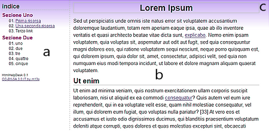

Html Help Desk è costituito da un insieme di file. Alcuni di essi possono essere rimossi se non necessari. Il file basic.html è il modello base di ogni pagina. Ogni nuova pagina può essere creata a partire da una copia di questo file. Il file indice.html contiene invece l'indice dei documenti ed andrà aggiornato ogni volta che si aggiunge una nuova pagina al progetto.
Il modello basic.html è costruito per integrare al proprio interno il contenuto di indice.html. In ogni pagina quindi è possibile individuare un menù laterale (a) che mostra il contenuto di indice.html ed un'area contenuti (b) in cui si sviluppa il documento corrente. Il modello include anche un gradiente (c) che personalizza graficamente la parte superiore delle pagine. La gestione del layout è affidata esclusivamente al foglio di stile style.css che è condiviso tra pagine ed indice. Modificando questo elemento è possibile adattare il template ad usi diversi.
Il menù laterale (a) è contenuto nel file indice.html Il modello di riferimento è basato su liste numerate suddivise in sezioni. Per aggiungere una nuova voce all'indice è quindi sufficiente aggiungere un nuovo blocco <li>.
Per il corretto funzionamento del template i link inseriti nel menù necessitano dell'attributo target="_top". Fanno ovviamente eccezione eventuali link esterni al progetto.
Se il menù è particolarmente lungo compariranno le normali barre di scorrimento. Si può eliminare questo comportamento aumentano la dimensione della proprietà height nel selettore iframe di style.css.
HHD è preimpostato per schermi a bassa risoluzione. Il selettore #esterno ingloba menù ed area contenuti ed è inizialmente impostato per una larghezza di 768 pixel ed un layout fisso. Il selettore #box contiene invece l'area contenuti vera e propria impostata ad una larghezza di 540 pixel.
Per aumentare la larghezza dell'area contenuti occorre quindi aumentare parallelamente la proprietà width sia nel selettore #esterno che nel selettore #box.
Per rendere invece il template fluido ed in grado di adattarsi a varie risoluzioni occorre procedere come segue. In style.css occorre eliminare il selettore #esterno quindi nel selettore #box occorre eliminare la proprietà width. In questo modo l'area contenuti slitterà al di sotto del menù. Per evitare un vuoto tra menù e contenuto si dovrà infine modificare la proprietà height nel selettore iframe.
La parte superiore delle pagine di HDD è personalizzata con uno sfondo a gradiente (c). Per rimuovere lo sfondo dall'area contenuti eliminare la proprietà background-image dal selettore #box. Per rimuovere lo sfondo dal menù eliminare la proprietà background-image dal selettore iframe.
Il gradiente predefinito è contenuto nel file sf.png. E' possibile cambiare gradiente modificando questo file. Alcuni gradienti alternativi sono contenuti nei file sf1.png, sf2.png ed sf3.png. Per utilizzare uno di questi gradienti eliminare l'originale sf.png e rinominare il gradiente voluto in sf.png.
Html Help Desk 0.1 è una versione preliminare pre-alpha. E' stata testata principalmente su Firefox Quantum ma sembra funzionare correttamente anche su Internet Explorer 11 ed Edge. Il foglio di stile è stato validato tramite il servizio del W3C. Ultimo aggiornamento: 06.05.2018.
Html Help Desk 0.1 è composto dai seguenti file: